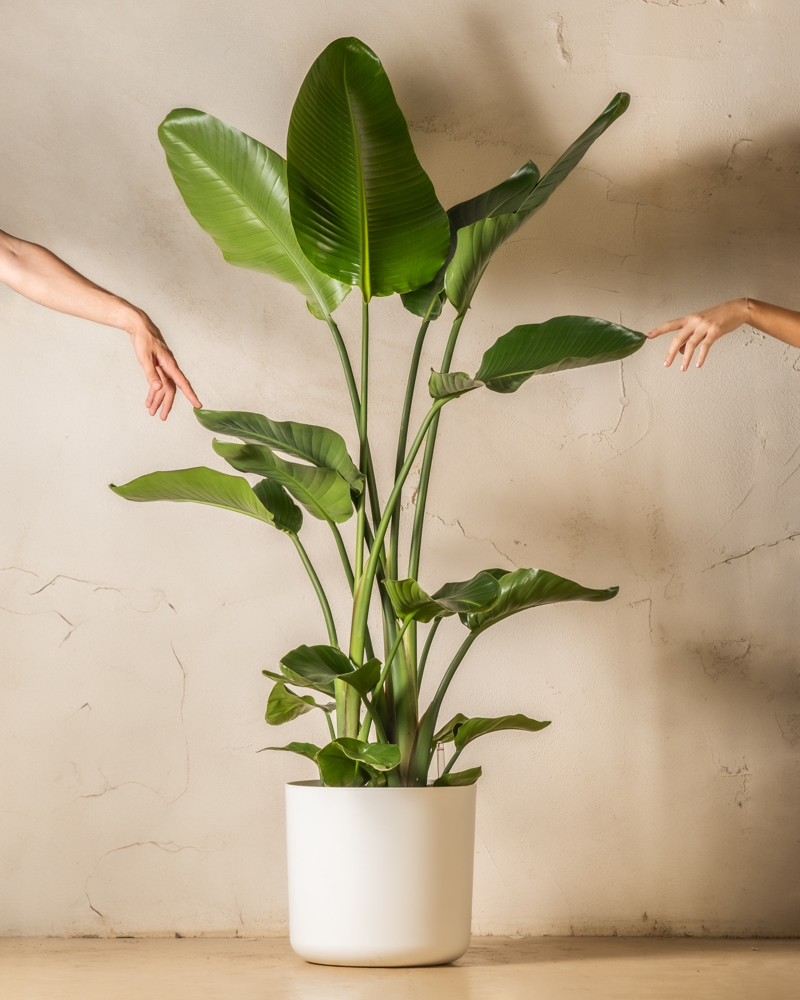

Javon Laing
I'm Javon, a 19-year-old computer science enthusiast currently pursuing my degree at UWI. When I'm not immersed in the world of coding and algorithms, you'll often find me on the badminton court, where I channel my competitive spirit and passion for the game. My journey in the world of technology began at a young age, where I first discovered my love for all things computer science. Beyond academics, I thrive on adventures, seeking new experiences and challenges whenever I can. Whether it's exploring the great outdoors or diving headfirst into a coding project, I'm always up for an exciting journey. My interest in web development stems from its creative and problem-solving aspects. I love the idea of designing user-friendly interfaces and creating web applications that can reach and engage a global audience. It's the perfect blend of my passion for technology and my desire for creative expression.
